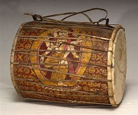

Dhimay
Dhimay is a drum-like Nepali musical instrument. It is played by Newars in Jatras and festivals alongside other musical instruments.
In the traditional context, Dhimay is played with idiophones of different types, depending on the local tradition.
According to local legends, the instrument is believed to have been invented by Lord Shiva.
In Dhimay-ensembles, called Dhimaybaja, the drum is accompanied by cymbals like Bhushyah, Chushyah, and sometimes by Tai-nai, a gong-like instrument.
Like Madal, Dhimay is made up of a single piece of wood but compared to madal, it produces a louder sound.
These days, Dhimey is played as a sort of bass drum, accompanying western instruments like the guitar.